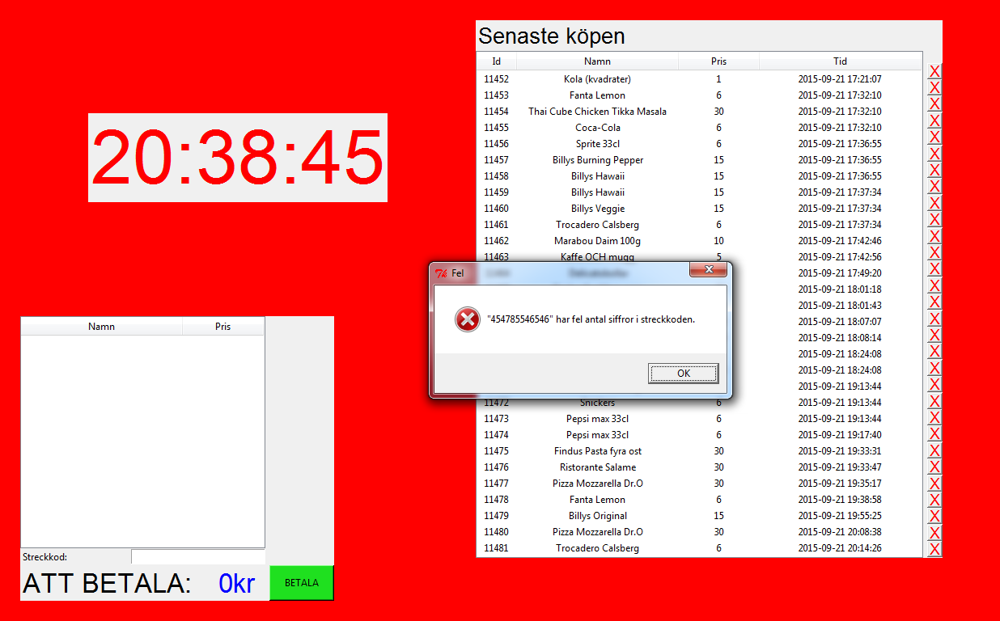
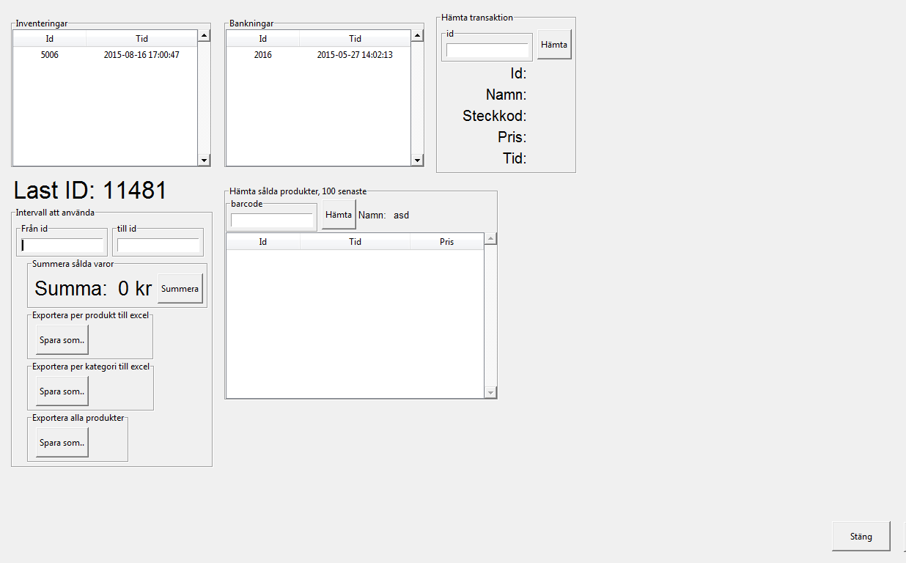
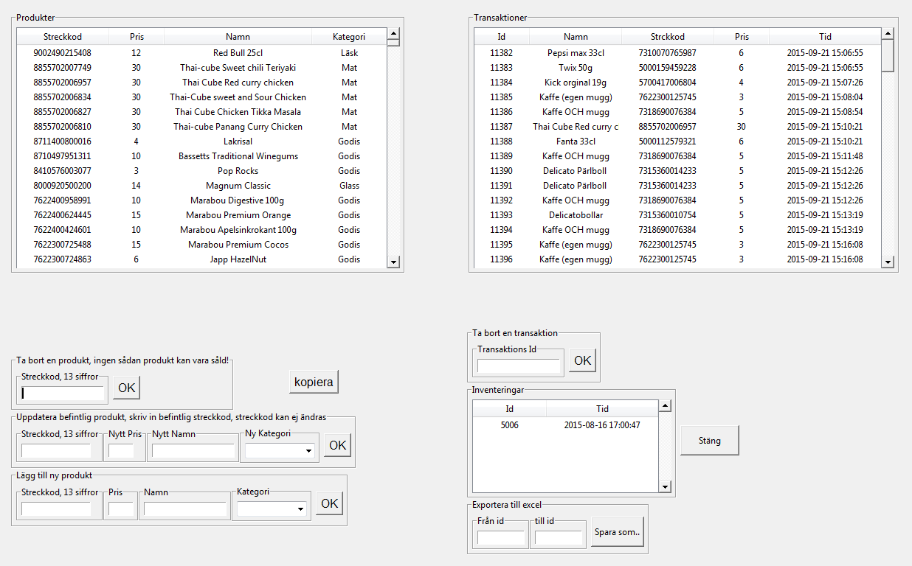
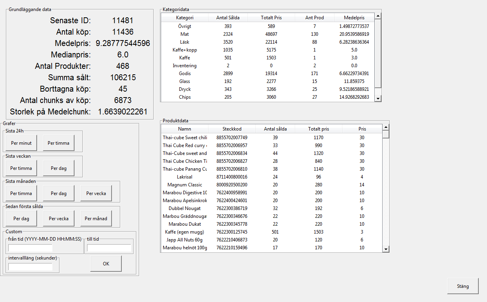

Kassasystem (källkod)
Det absolut största projektet som jag skrivit är ett kassasystem för en studentförening som behövde bättre koll på sin försäljning i sin kiosk. Kassan är skriven helt från grunden av enbart mig och är ca 2000 rader kod. Den har körts kontinuerligt i ca 2 år utan några större problem eftersom att driftsäkerhet är väldigt viktigt.
Kassan är skriven i python med Tkinter som gränssnitt och sqlite3 som databas eftersom ett av målen med kassan är att den ska vara så enkel som möjlig och så lätt att underhålla som möjligt. Jag brukar uppgradera kassan lite då och då med nya funktioner.
Eftersom att kassan används av många nya personer så var användarvänlighet och enkelhet väldigt viktigt i designen av kassan. Gränssnittet är fokuserat på enkelhet för lätt upplärning och minimering av felkällor. Om något går fel så uppmärksammas användaren på felet.
{kind=link}
Skärmen blinkar när ett felmeddelande visas för att uppkalla användarens uppmärksamhet eftersom att användarna inte alltid kollar på skärmen när produkter skannas.
{kind=link}
Hämta information om köp, sålda varor, totalsummsa osv.
{kind=link}
Huvudskärmen för kassan.
{kind=link}
Modifikation (lägg till/ta bort/ändra) av produkter.
{kind=link}
Sida för att få statestik.